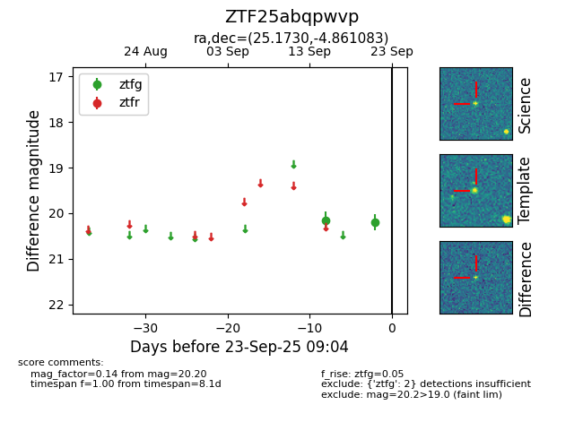

FINK: ZTF25abqpwvp
Lasair: ZTF25abqpwvp
ALeRCE: ZTF25abqpwvp
ZTF25abqpwvp (ztf,fink)
equatorial (ra, dec) = (25.1730,-4.86108)
galactic (l, b) = (152.9035,-64.82687)

last ztfg=20.20
2 ztfg detections